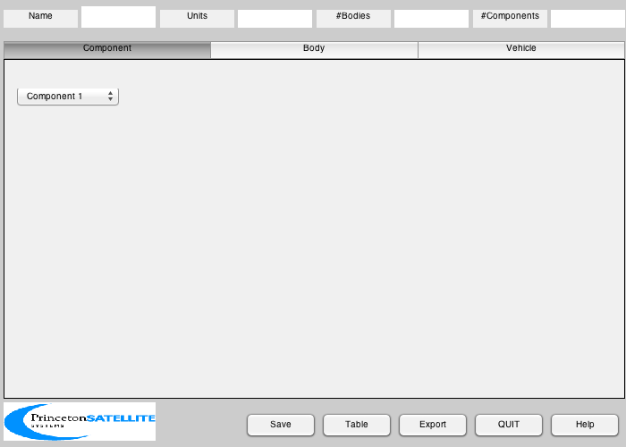
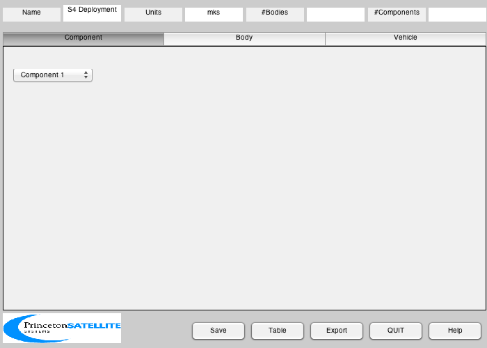
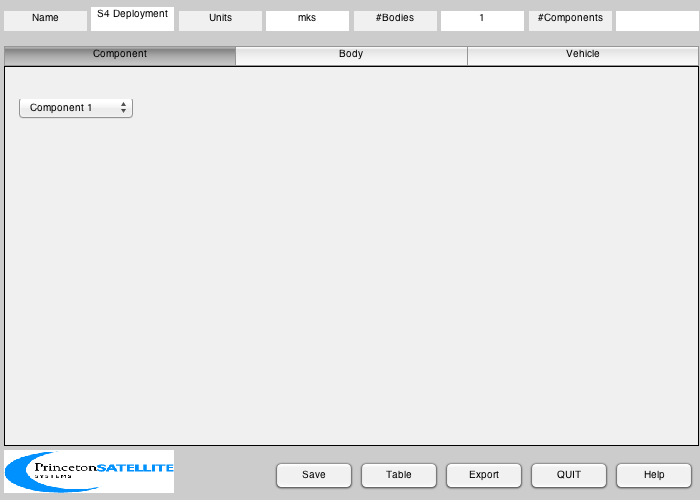
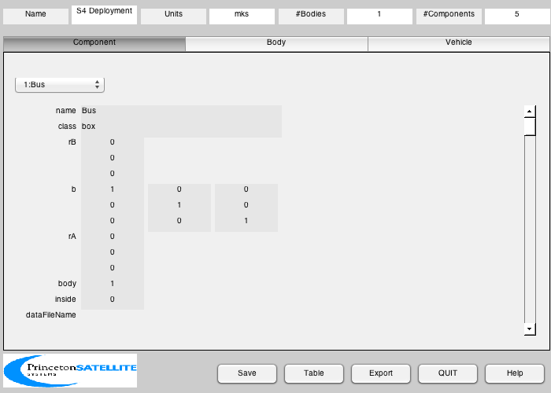
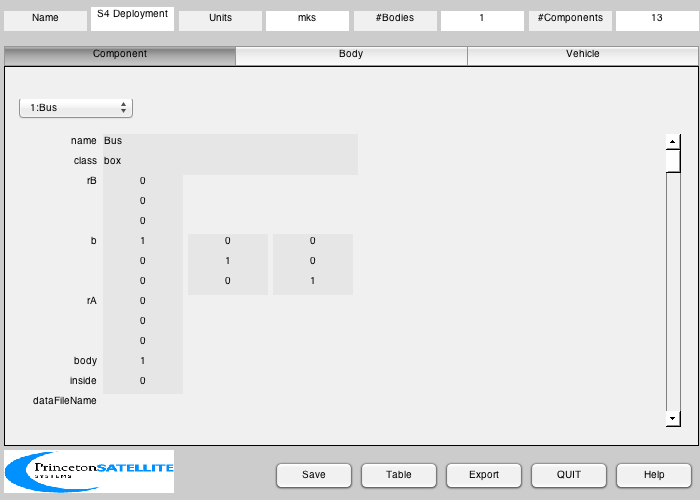
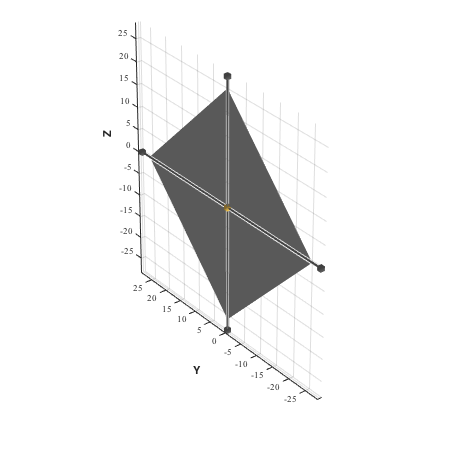

40 m Scalable Sail, for deployment analysis.
This model has four triangular quadrants, booms and tip masses, and a core box. The script saves one of two files depending on the value of the "deployed" option, S4PreDeploy.mat or S4Deployed.mat
Since version 7. ------------------------------------------------------------------------ References: 1. Wie, Murphy, Paluszek, and Thomas, "Robust Attitude Control Systems Design for Solar Sails, Part 1: Propellantless Primary ACS". AIAA 2004-5010 2. LeFevre and Jha, "(Student Paper) Attitude Dynamics and Stability of Solar Sails During Deployment". AIAA-2006-1704 ------------------------------------------------------------------------ See also S4Deployment., BuildCADModel, CreateBody, CreateComponent, DrawSCPlanPlugIn, Inertias, VFToMassStructure, Eul2Mat, FindDirectory, SaveStructure, Polygon ------------------------------------------------------------------------
Contents
%------------------------------------------------------------------------------- % Copyright 2006 Princeton Satellite Systems, Inc. All rights reserved. %------------------------------------------------------------------------------- clear mB; %%%%%%%%%%%%%%%%%%%%%%%%% % options deployed = 1; % 0 or 1 %%%%%%%%%%%%%%%%%%%%%%%%%
Characteristic dimensions
%-------------------------- L = 40; % length, m aSail = 1200; % area, m2 Lboom = 28; % max length of the booms Lsail = sqrt(2*aSail/4);
Mass of each sail and boom (4 each on sailcraft)
%-------------------------------------------------
mSail = 6/4;
mBoom = 7/4;
rhoS = 6/1200;
rhoB = mBoom/Lboom;
mTip = 1/4;
Rhub = 1;
Initialize
%----------- BuildCADModel( 'initialize' );
Add general properties
%----------------------- BuildCADModel( 'set name' , 'S4 Deployment' ); BuildCADModel( 'set units', 'mks' ); %------------------------------------------------------------------
Create CAD bodies first
%------------------------------------------------------------------
Core
%----- m = CreateBody( 'make', 'name', 'Core' ); BuildCADModel('add body', m );
This creates the connections between the bodies
%------------------------------------------------ BuildCADModel( 'compute paths' ); %------------------------------------------------------------------
Create CAD Components second
%------------------------------------------------------------------
Core
%-----
mBus = 50;
mPayload = 13;
mCentral = 8;
Spacecraft
%----------- m = CreateComponent( 'make', 'box','name','Bus','body',1,... 'mass', mBus+mPayload+mCentral, 'faceColor', 'gold foil','rA',[0;0;0],... 'x', Rhub,'y', Rhub, 'z',Rhub, 'inside', 0 ); BuildCADModel( 'add component', m ); rS = Rhub*[0 0 0 0; 0.5 -0.5 -0.5 0.5; 0.5 0.5 -0.5 -0.5];
Sail
%----- if deployed vSail = [0 0 0; 0 Lsail 0; 0 0 Lsail]; else vSail = [0 0 0; 0 0.1 0; 0 0 0.1]; end [area, n, r] = Polygon( vSail ); Bsail = {eye(3) Eul2Mat([pi/2;0;0]) Eul2Mat([pi;0;0]) Eul2Mat([3*pi/2;0;0])}; mS = VFToMassStructure( vSail, [1 2 3], struct('a',area,'r',r) ); mS.mass = rhoS*mS.mass; mS.inertia = rhoS*mS.inertia; for k = 1:4 m = CreateComponent( 'make', 'sail','name',['Sail' num2str(k)],'body',1,... 'mass', mS, 'faceColor', 'mirror','rA',rS(:,k),... 'b',Bsail{k}',... 'sigmaS', [1 1], 'sigmaD', [0.0 0.0], 'sigmaA',... [0.0 0.0], 'emissivity', [0.3, 0.3],... 'vertex',vSail,'face', [1 2 3], 'inside', 0 ); BuildCADModel( 'add component', m ); end
Booms and tip masses
%--------------------- if deployed lBoom = Lboom; else lBoom = Rhub; end Bboom = Eul2Mat([-pi/2;0;0]); uTip = [0 0 0 0; 1 0 -1 0; 0 1 0 -1]; inr = Inertias( mBoom, [0.2 lBoom 0.01], 'hollow cylinder', 1 ); cM = [0;0;1]*lBoom/2; mB.mass = mBoom; mB.inertia = inr; for k = 1:4 mB.cM = cM(:,1); m = CreateComponent( 'make', 'cylinder','name',['Boom' num2str(k)],'body',1,... 'rUpper', 0.2, 'rLower', 0.2, 'h', lBoom,... 'b',(Bsail{k}*Bboom)',... 'mass', mB,... 'faceColor', 'steel','rA',[0;0;0],... 'inside', 1 ); BuildCADModel( 'add component', m ); m = CreateComponent( 'make', 'box','name',['Tip' num2str(k)],'body',1,... 'mass', mTip, 'faceColor', 'steel','rA',lBoom*uTip(:,k),... 'x', Rhub,'y', Rhub, 'z',Rhub, 'inside', 0 ); BuildCADModel( 'add component', m ); end
Export
%-------- g = BuildCADModel( 'get cad model' ); cd(FindDirectory('SailData')); if deployed SaveStructure( g, 'S4Deployed' ); else SaveStructure( g, 'S4PreDeploy' ); end
3D View
%--------- DrawSCPlanPlugIn( 'initialize', g ); %-------------------------------------- % PSS internal file version information %--------------------------------------